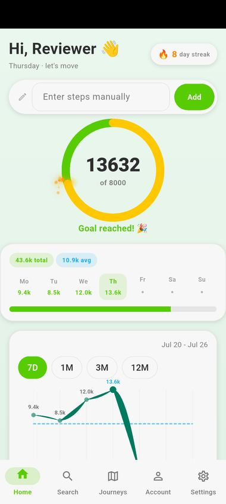
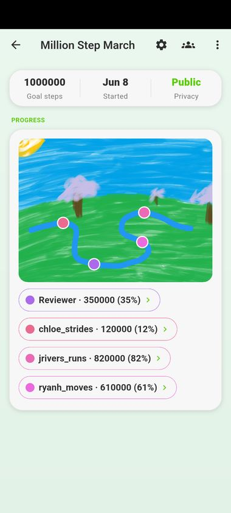
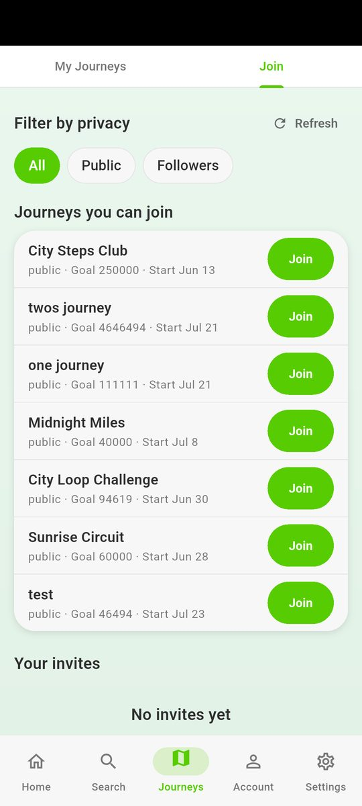

Journey Together
A step-tracking app you use with your friends rather than alone. On the App Store and Google Play.
Why it exists
My friends and I wanted one step goal we could all work towards. A journey is that — a shared target drawn as a path across a painted landscape. Everyone walks their own days and progresses independently, and everyone can see how far the others have got. Alongside it is the ordinary daily side: your own count, a goal, a streak, the week so far.
We also kept asking each other the same question — how many steps are you on today? Now you just look. How much there is to look at is your own setting: you choose how many days of your step history other people can see, from none, to just today, to a week or more. That visibility is where the accountability comes from, whether it is someone’s day or the longer trend of a journey.
What it looks like



Built with
- Flutter and Dart. One codebase for both platforms, which is the only reason a project this size ships on iOS and Android at all rather than picking one.
- Firebase. Authentication for accounts, Firestore for the data, and Crashlytics and Analytics for finding out what breaks once it is on other people’s phones rather than mine.
- Health Connect on Android and Apple Health on iOS. So the step count can come from the phone the person already carries, rather than being typed in.
Health data needed real care
This is the part that made it different from anything I had built before. Steps are health data, and both stores treat them that way: you declare what you read, why you read it, and where it goes, and the declaration has to keep matching the code as the app changes.
The decisions that followed from taking that seriously:
- You decide what anyone else sees. Your step history has a sharing window you set yourself — nothing at all, just today, the last week, as much as you like — and an account can be private, so following is by request rather than automatic.
- What you have not shared is not sent. Those limits are applied before anything leaves the server, so hiding something in the interface is never the only thing stopping it being seen.
- How the app is used is kept apart from who you are. Nothing identifying an account goes to analytics.
- The privacy policy has to keep up. It is the part that goes stale first, and being out of date is not a small matter when what it describes is what you read from someone’s phone. It gets checked whenever what the app reads changes.
Still going
It is on both stores and I am still working on it, so treat the screenshots as a snapshot rather than a spec.